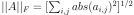

numpy.linalg.norm¶
-
numpy.linalg.norm(x, ord=None, axis=None, keepdims=False)[source]¶ Matrix or vector norm.
This function is able to return one of eight different matrix norms, or one of an infinite number of vector norms (described below), depending on the value of the
ordparameter.- Parameters
- xarray_like
Input array. If axis is None, x must be 1-D or 2-D, unless ord is None. If both axis and ord are None, the 2-norm of
x.ravelwill be returned.- ord{non-zero int, inf, -inf, ‘fro’, ‘nuc’}, optional
Order of the norm (see table under
Notes). inf means numpy’s inf object. The default is None.- axis{None, int, 2-tuple of ints}, optional.
If axis is an integer, it specifies the axis of x along which to compute the vector norms. If axis is a 2-tuple, it specifies the axes that hold 2-D matrices, and the matrix norms of these matrices are computed. If axis is None then either a vector norm (when x is 1-D) or a matrix norm (when x is 2-D) is returned. The default is None.
New in version 1.8.0.
- keepdimsbool, optional
If this is set to True, the axes which are normed over are left in the result as dimensions with size one. With this option the result will broadcast correctly against the original x.
New in version 1.10.0.
- Returns
- nfloat or ndarray
Norm of the matrix or vector(s).
See also
scipy.linalg.normSimilar function in SciPy.
Notes
For values of
ord < 1, the result is, strictly speaking, not a mathematical ‘norm’, but it may still be useful for various numerical purposes.The following norms can be calculated:
ord
norm for matrices
norm for vectors
None
Frobenius norm
2-norm
‘fro’
Frobenius norm
–
‘nuc’
nuclear norm
–
inf
max(sum(abs(x), axis=1))
max(abs(x))
-inf
min(sum(abs(x), axis=1))
min(abs(x))
0
–
sum(x != 0)
1
max(sum(abs(x), axis=0))
as below
-1
min(sum(abs(x), axis=0))
as below
2
2-norm (largest sing. value)
as below
-2
smallest singular value
as below
other
–
sum(abs(x)**ord)**(1./ord)
The Frobenius norm is given by [1]:

The nuclear norm is the sum of the singular values.
Both the Frobenius and nuclear norm orders are only defined for matrices and raise a ValueError when
x.ndim != 2.References
- 1
G. H. Golub and C. F. Van Loan, Matrix Computations, Baltimore, MD, Johns Hopkins University Press, 1985, pg. 15
Examples
>>> from numpy import linalg as LA >>> a = np.arange(9) - 4 >>> a array([-4, -3, -2, ..., 2, 3, 4]) >>> b = a.reshape((3, 3)) >>> b array([[-4, -3, -2], [-1, 0, 1], [ 2, 3, 4]])
>>> LA.norm(a) 7.745966692414834 >>> LA.norm(b) 7.745966692414834 >>> LA.norm(b, 'fro') 7.745966692414834 >>> LA.norm(a, np.inf) 4.0 >>> LA.norm(b, np.inf) 9.0 >>> LA.norm(a, -np.inf) 0.0 >>> LA.norm(b, -np.inf) 2.0
>>> LA.norm(a, 1) 20.0 >>> LA.norm(b, 1) 7.0 >>> LA.norm(a, -1) -4.6566128774142013e-010 >>> LA.norm(b, -1) 6.0 >>> LA.norm(a, 2) 7.745966692414834 >>> LA.norm(b, 2) 7.3484692283495345
>>> LA.norm(a, -2) 0.0 >>> LA.norm(b, -2) 1.8570331885190563e-016 # may vary >>> LA.norm(a, 3) 5.8480354764257312 # may vary >>> LA.norm(a, -3) 0.0
Using the axis argument to compute vector norms:
>>> c = np.array([[ 1, 2, 3], ... [-1, 1, 4]]) >>> LA.norm(c, axis=0) array([ 1.41421356, 2.23606798, 5. ]) >>> LA.norm(c, axis=1) array([ 3.74165739, 4.24264069]) >>> LA.norm(c, ord=1, axis=1) array([ 6., 6.])
Using the axis argument to compute matrix norms:
>>> m = np.arange(8).reshape(2,2,2) >>> LA.norm(m, axis=(1,2)) array([ 3.74165739, 11.22497216]) >>> LA.norm(m[0, :, :]), LA.norm(m[1, :, :]) (3.7416573867739413, 11.224972160321824)